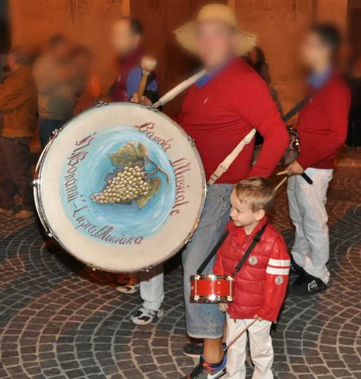

Michele Rinaldi.
Vengo da Cupramontana, nelle Marche. Ho studiato informatica al Marconi Pieralisi di Jesi e ho scelto Interaction Design al Politecnico di Milano, nella sede di Lecco.
Ho iniziato a occuparmi di grafica mentre montavo i miei video. Poi sono arrivati Photoshop, Figma e Fusion 360, le prime interfacce e i lavori per eventi e musicisti.
Durante il PCTO in SYEEW ho lavorato al redesign di un’app e a una demo in Flutter. In università ho iniziato a lavorare anche su progetti di interazione in gruppo, come Night Train Ride.
I miei progetti ↗I primi video
Il 10 agosto 2015, a nove anni, ho pubblicato il mio primo video. Nei tre anni successivi ne ho realizzati 213: gameplay, curiosità storiche con mio fratello, magie, esperimenti e tutorial.
Mi occupavo di tutto, dal montaggio alle grafiche, imparando da solo. È stato il primo modo che ho trovato per unire racconto, tecnologia e un progetto tutto mio.
La batteria.
Studio musica da quando avevo quattro anni e suono la batteria da quando ne avevo sei. Faccio parte del Corpo Bandistico Don N. Bonanni di Cupramontana.
Ho affiancato gli insegnanti nei corsi musicali e nei centri estivi, lavorando con bambini e ragazzi. Insegnare percussioni mi ha fatto scoprire un altro modo di condividere quello che mi appassiona.
